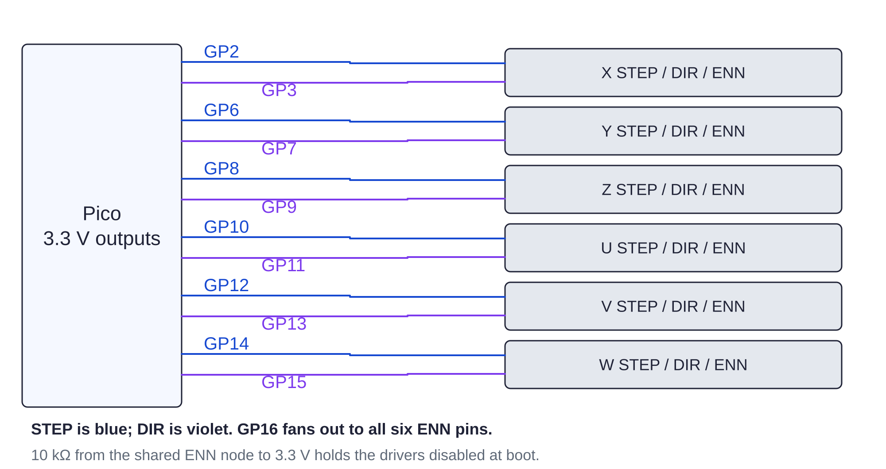

Controller / motion122 / 179
Route STEP and DIR
Each driver receives its own motion pair. The shared ENN signal holds every driver disabled until the controller permits motion.
Add12 STEP/DIR wires · one ENN bus · one 10 kΩ pull-up
Tools / setupUSB and 24 V unplugged · fine solder tip · meter

| Axis | Pico STEP / DIR (physical pin) |
|---|---|
| X | GP2 pin 4 / GP3 pin 5 |
| Y | GP6 pin 9 / GP7 pin 10 |
| Z | GP8 pin 11 / GP9 pin 12 |
| U yaw | GP10 pin 14 / GP11 pin 15 |
| V pitch | GP12 pin 16 / GP13 pin 17 |
| W roll | GP14 pin 19 / GP15 pin 20 |
Ready when
GP16 reaches all six ENN pins. One 10 kΩ resistor pulls this shared node to 3.3 V. Each STEP/DIR pair reaches one driver only. Crossed pairs or an absent ENN pull-up can move the wrong axis at boot. Meter and correct the route before installing drivers.